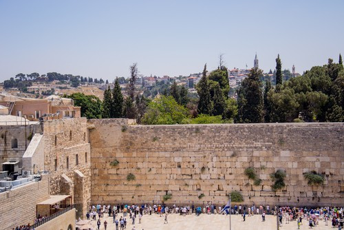
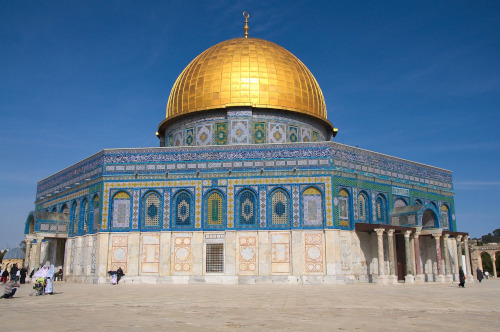

Pontos Turisticos

Muro das Lamentações

Santo Crepusculo

Monte das Oliveiras

Cupula da Rocha

Jerusalém é uma cidade localizada em um planalto nas montanhas da Judeia
entre o Mediterrâneo e o mar Morto,é uma das cidades mais antigas do mundo.
É considerada sagrada pelas três principais religiões abraâmicas -
judaísmo, cristianismo e islamismo.
"A cidade de Jerusalém é um dos locais mais relevantes do mundo justamente por ser a cidade sagrada de três religiões: cristianismo, islamismo e judaísmo. Por esse motivo também, é um local alvo de tensões e disputa constantes entre israelenses e palestinos, já que ambos reivindicam o direito de a cidade ser nomeada a sua capital.
Saiba mais...A população judaica divide-se em asquenazes, de origem europeia, e sefarditas, originários da bacia mediterrânea (que além de países europeus, como França Itália e Espanha, engloba nações africanas e asiáticas como Marrocos, Tunísia, Turquia e Líbano). A cultura do país está intrinsecamente ligada à sua história e ao judaísmo. A diversidade cultural de Israel deriva da heterogeneidade de sua população, cujo resultado é um caldeirão de costumes e crenças.
Saiba mais...Vamos sair de férias, faça o seu dia.
© Copyright 2023 Todos os direitos reservados - Desenvolvido por FSP Dev